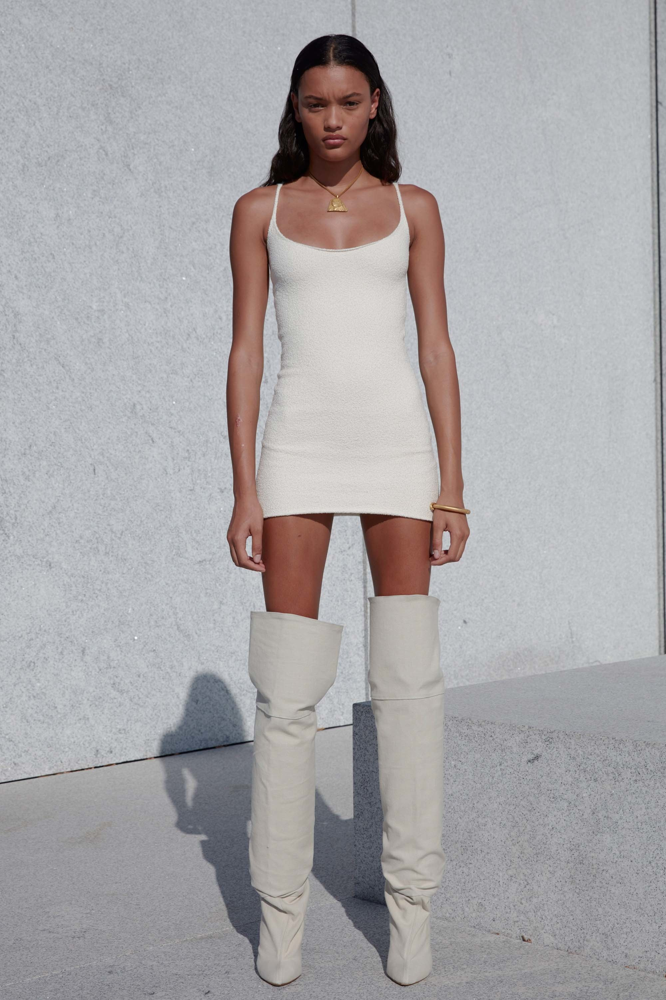
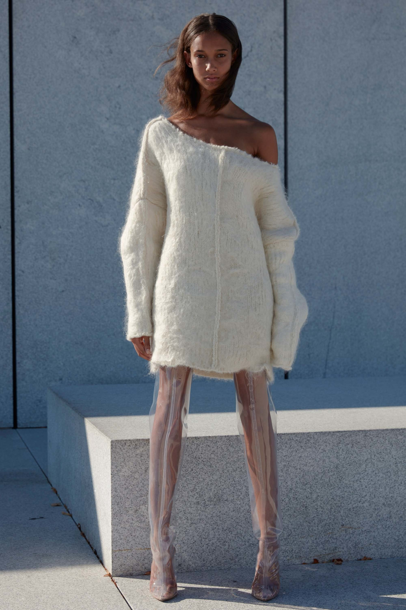
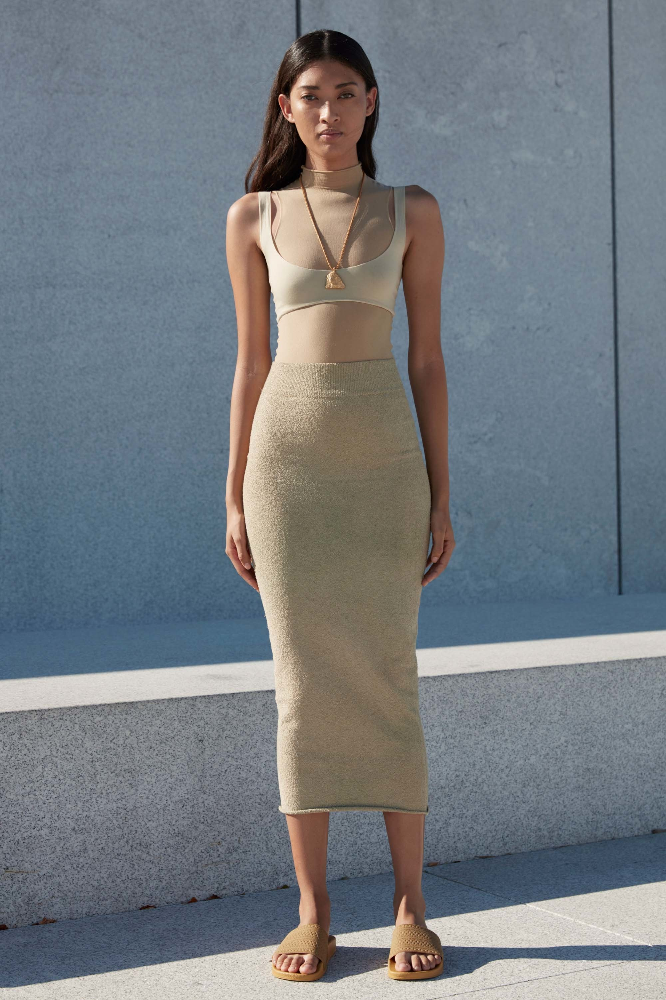
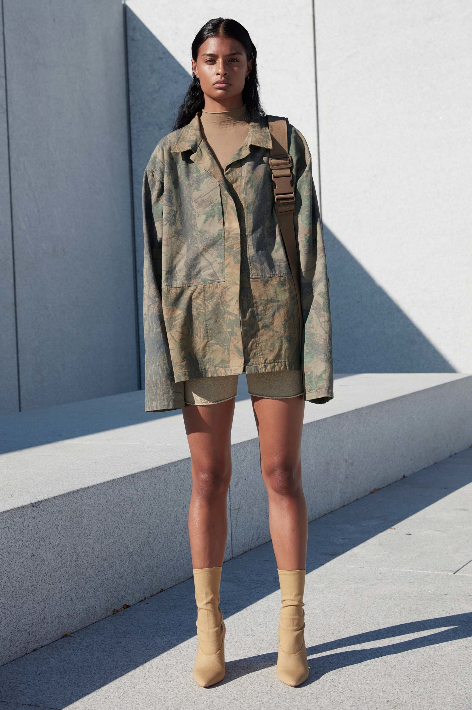
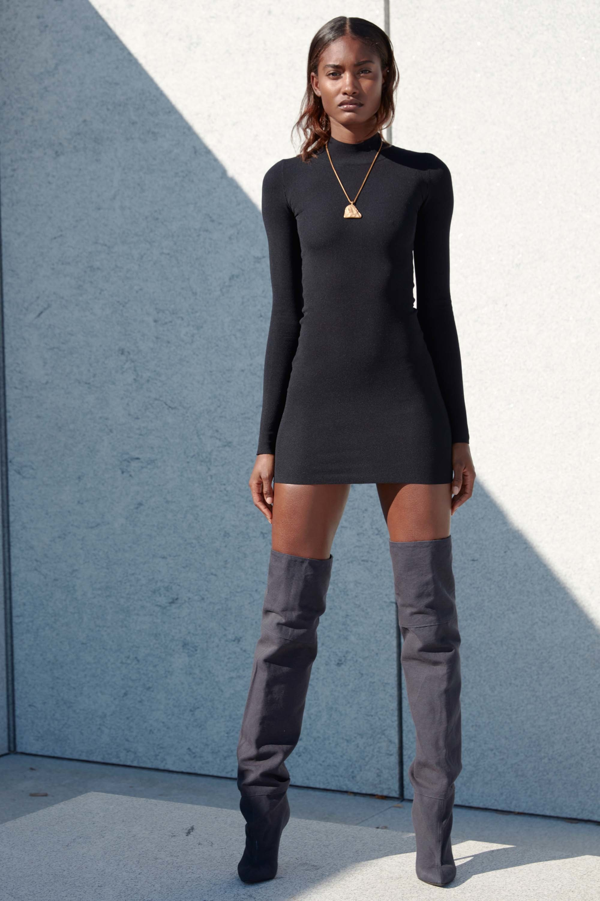
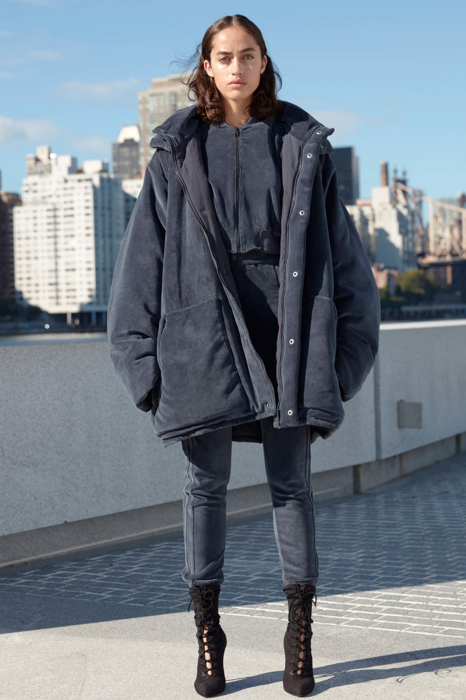
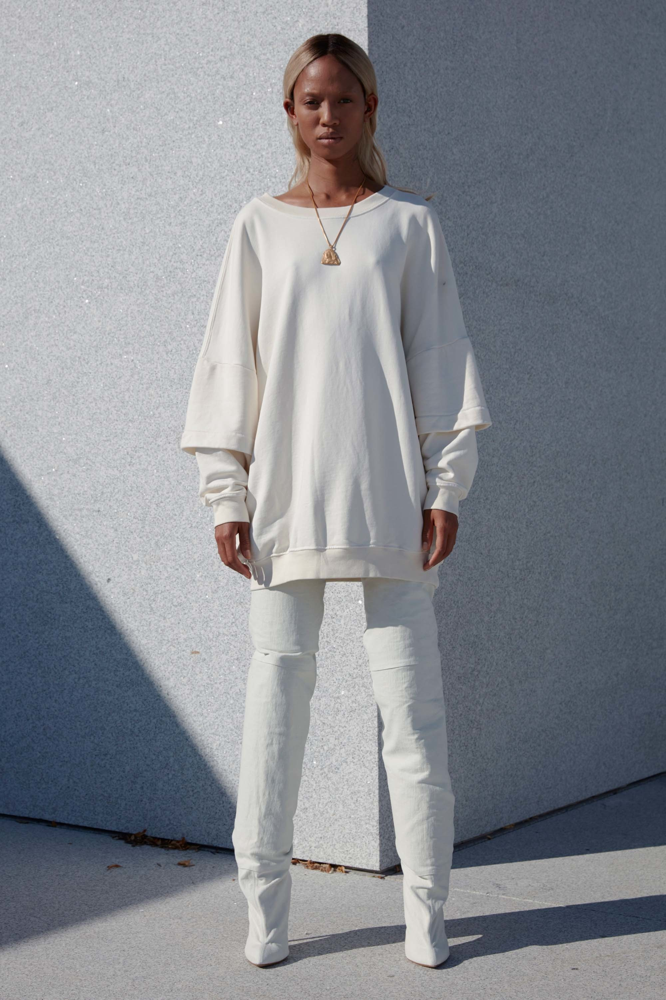
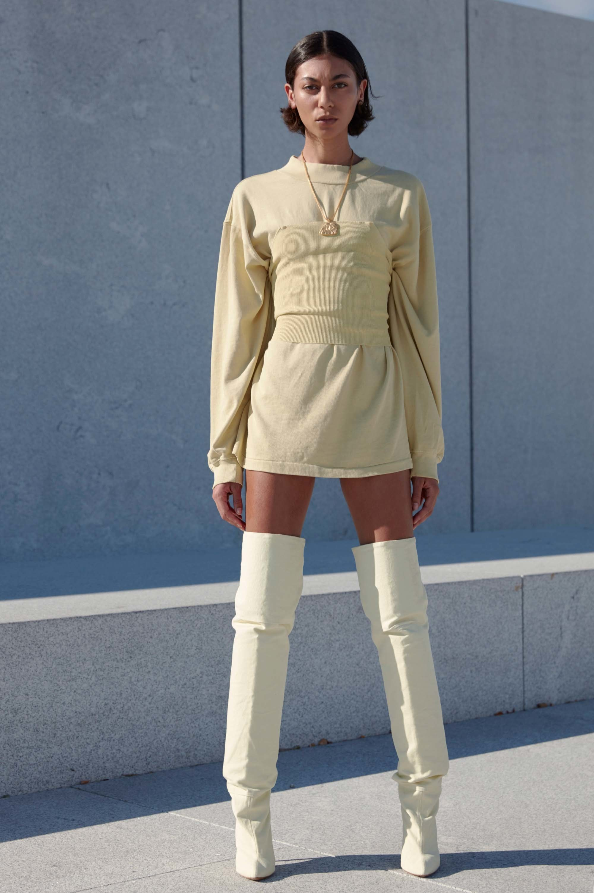
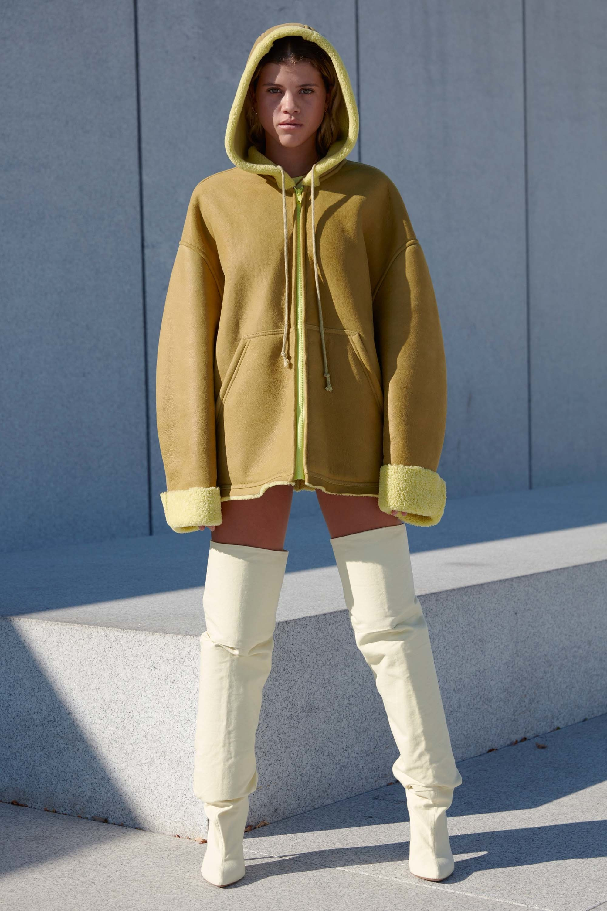
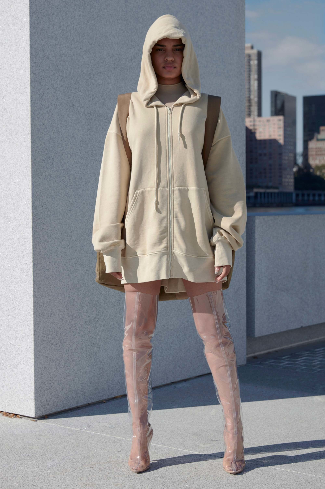

Ready To Wear
Spring 2017
Shearling outerwear was a big emphasis here, but perhaps that’s not so unusual anymore in our post-season world. There were also a good many delectable knits of both the slinky and the slouchy variety. In other words, lots of closet staples for Kanye’s true believers and otherwise. The over-the-knee stiletto boots need a good deal of work. And the same goes for the execution of his shows.








